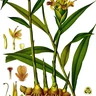

Correspondence Grimoire
Aphrodisiac

Ginger Essential OilA substance that increases or stimulates sexual desire.
The Greek Goddess of Love, Aphrodite, lends her name to an extensive list of foods and other items believed to increase the libido and enhance the chances of seduction and fecundity. The issue of fertility has always been an overriding concern for humankind, and any substance that enhances sexual prowess or increases the chance of conception has always been highly sought after.
Ancient Origins
Ancient peoples had a limited seasonal diet, and a bad hunt or the failure of a crop could be a life-or-death matter. Chances of fertility are restricted when nourishment is poor, and so certain foods were given magickal powers in the hopes that they might increase potency. Pliny the Elder and Dioscorides documented many of these aphrodisiacs as far back as the first century.
The Doctrine of Signatures
Given that early peoples did not know about the chemical constituencies of food, many aphrodisiacs were chosen primarily because of their symbolic significance. The Doctrine of Signatures, the notion that a plant or feature of an animal similar in appearance or quality to a body part could be beneficial to the organ it resembles, had an important part to play in deciding which foods had aphrodisiac qualities.
To our ancestors, any food that resembled the sexual organs carried powerful suggestive meanings. A symbol is a potent force, and often the association alone is enough to bring about the desired effect.
Animal Symbolism
The behavior and lifestyle of certain animals made them fertility symbols too. The sparrow, a prolific breeder, was sacred to Aphrodite and its blood was a popular ingredient in love potions. Ground rhinoceros horn is symbolic of the libido, and the power of the rhino is perceived as the ultimate in male sexual energy.
Proximity Magick
It was not always necessary for aphrodisiac substances to be eaten. Some were toxic but could work their magick through close proximity. The berries of mistletoe, for example, were a reminder of the semen of the Gods and the little crosses on the undersides were kisses, but it would be unwise to eat them.
Seeds, Eggs, and Potential
Seeds, nuts, bulbs, and eggs, because they are full of potential new life, were considered aids to fertility. Snails were thought to enhance sexual appetites because of the viscous fluid of the trails they leave behind, although slugs are not considered to have any aphrodisiac qualities whatsoever.
Science Meets Symbolism
Modern analysis has proven that some supposedly aphrodisiac foods may actually deserve their reputation. The fifty oysters that Casanova reputedly swallowed every day not only resemble the female sexual parts in scent, texture, and form, but their high zinc content may indeed help enhance the libido.
Nuts, Seeds, and Bulbs
- Aniseed: Falls into the category of seeds. Also aids digestion and sweetens the breath, which could explain why the Romans considered it a useful ingredient for seduction.
- Star Anise: Because of its shape, star anise was sacred to the Goddess and therefore a potent fertility symbol.
Fruits
In general, all seed-bearing fruits are aphrodisiac. Their numerous seeds, texture, scent, and color make them a naturally sensual foodstuff.
- Apple: Infamous as the fruit that Eve gave to Adam, a symbol of sexual awakening.
- Cherry: Sensuously red and juicy, containing a potent symbol of new life inside the stone. "Popping the cherry" is a slang term for losing one's virginity.
- Raspberries and Strawberries: Libido-enhancing because of their color, their many tiny seeds, and their resemblance to nipples.
- Tomato: Also called the Love Apple. The name is the result of an accidental misinterpretation: originally a yellow color, tomatoes were called Pomo Dor (Apple of Gold) in Italy, then Pomo d'Moro (Apple of the Moors, referring to Spanish origins). From there, it was just a slip of the tongue to the French Pomme d'Amour, or Love Apple.
Male Genitalia
Many phallic foods are self-explanatory, all considered powerful simply because of their shape. Asparagus, carrots, and cucumber are just a few of the "phallic vegetables."
- Avocado: The Mexicans called the avocado tree the "testicle tree," since the fruit dangles down in pairs. The sensual texture of avocado adds to its reputation.
- Banana: The banana flower resembles the phallus. Islamic tales say that Adam and Eve covered their sexual parts with banana leaves rather than the more common fig leaves.
- Cloves: Because they resemble little phalluses, cloves were considered to enhance male potency. The clove tree was planted to signify the birth of a baby boy in certain parts of Indonesia, the health of the tree reflecting the health of the child as it grew up.
Female Genitalia
- Almond: The same shape as the vesica piscis, the sacred doorway through which matter emerges into spirit. As a nut, it carries the potential for new life.
- Fig: The plethora of tiny seeds inside the fig is symbolic of fertility, and the moist plumpness of the fruit has a very sensual, feminine element.
- Oyster: The oyster's resemblance in form, scent, and texture to the female genitalia is renowned. The pearl sometimes found inside was said to increase the powers of arousal because it resembles the clitoris. Other shellfish, such as mussels, fall into this same category.
Spices and Herbs
Anything sharp-tasting or pungent is believed to stimulate the senses, so spices are often used as libido-enhancing ingredients.
- Asafoetida: The ground root of a fennel-like plant with a powerful odor. Despite its folk name, Devil's Dung, it is used as a sexual stimulant in Ayurvedic medicine.
- Cinnamon: The glorious scent of cinnamon was reputedly used as oil by the Queen of Sheba to help her capture the attention of King Solomon.
- Coriander: Also comes under the category of seeds. Reputed to stimulate appetites of all kinds.
- Fennel: The Egyptians used this as a sexual stimulant. It contains plant estrogens that can help balance female hormones.
- Ginger and Ginseng: Considered to have aphrodisiac powers because of their sharp sensual taste, and because their roots resemble the human form.
- Mint: A Greek legend says that Menthe, a beautiful nymph, was transformed into the herb because Persephone was jealous of the beautiful scent that captivated her husband, Pluto.
Honey
The sweetness of honey made it a rarity for ancient peoples. It is likely to have given humankind its first instance of alcohol in the form of mead, and its intoxicating effect has distinct aphrodisiac qualities. Bees are themselves symbols of fertility, and honey gives its name to the honeymoon period spent by newlyweds immediately after their marriage.
Chocolate
The melting point of chocolate is the same as blood temperature, so its mouth-feel alone is a sensual experience. Chocolate contains mood-lifting substances, including phenylethylamine, which induces feelings of euphoria when released into the bloodstream. Still arguably the most popular food given as a gesture of love. When the sixteenth-century Spanish conquistador Hernan Cortes heard about its reputation as an aphrodisiac, he planted two thousand cacao trees.